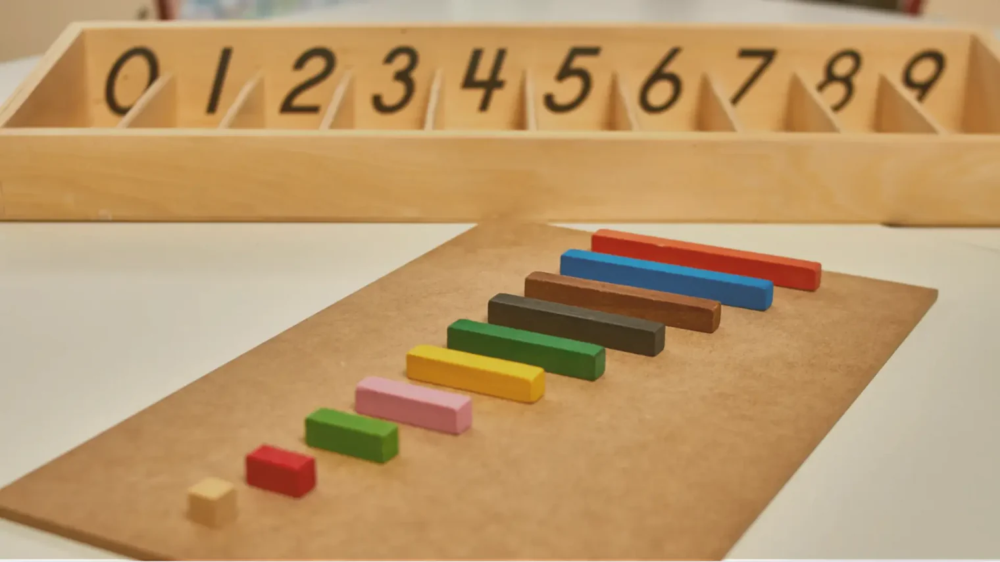
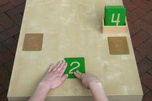
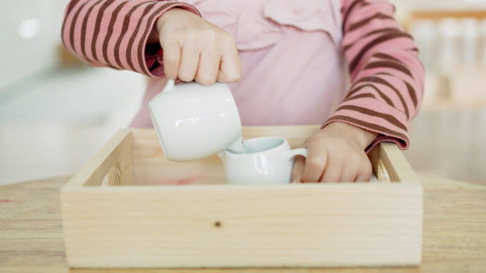
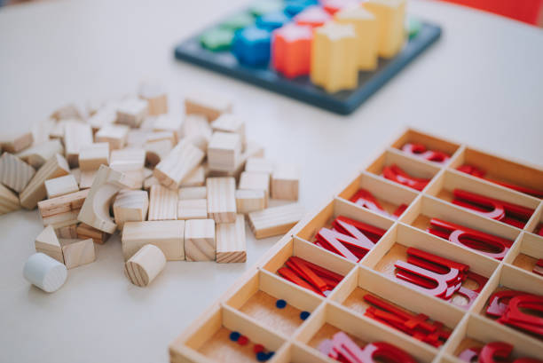
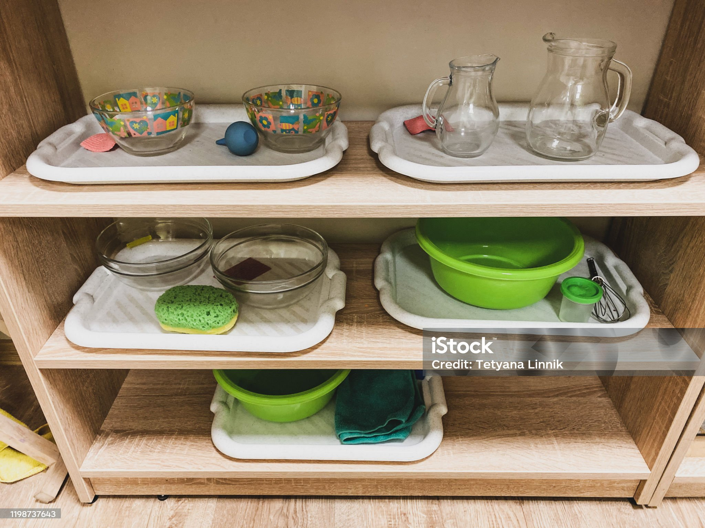
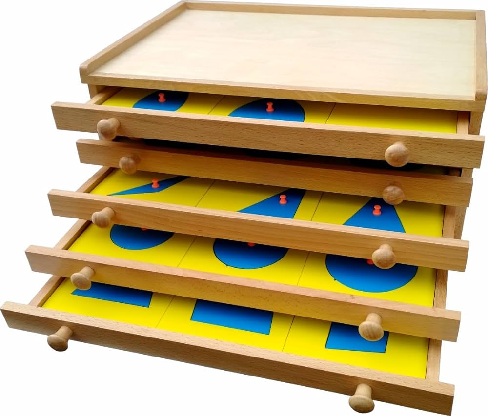

Learn how Montessori's useful, tangible materials encourage self-directed learning and purposeful play to develop children's basic numeracy skills between the ages of three and five.
The Montessori method, developed by Dr Maria Montessori in the early 1900s, centres children as capable, self-directed learners who construct understanding through hands-on engagement with specially designed materials.
✏️ Click any paragraph to editIn Montessori approach mathematics is natural and meaningful part of the children's development. Montessori philosophy consider children are born with mathematical mind and early mathematical understanding can emerge through hands on experience through intentional environment (Follari, 2015). The Montessori classroom is the structural environment that supports mathematical learning through the accessible, aesthetically pleasing spaces where children can independently select materials based on their interest developmental readiness (Montessori Australia, n.d.). Children learn mathematical concepts not through the worksheet or direct instruction but through concrete experiences, resources that promote abstract thinking.
The materials and resources are purposeful, sequenced, self-correcting that helps children to discover mathematical concepts independently. As children explore the Montessori materials such as counting objects, number rods, beads chains and sorting activities which foster quantity, numbers, patterns, measurements and problem solving's. As children hold the control for making mistakes and amending it, that promotes self-resilience, confidence, logical thinking reasoning and persistence (Follari, 2015). In Montessori settings mathematics learning is done through movement and sensory exploration i.e by touching, manipulating, organising materials, sensory activity of recognizing numbers. As Montessori approach belief that children learn best during critical periods when they seek order, structure and purposeful play.
Montessori mathematics aligns with the curriculum areas through real life and sensory activities. Daily activities like pouring, sorting and matching, sequencing, classification, comparison, spatial awareness and problem solving. The role of the educator is a facilitator and observer rather than directing the children learning. Educator carefully prepared the environment and introduce the mathematical concepts through demonstration and follow up future learning by observing children's engagement (ACECQA, 2022).
hello on several major theories of cognitive and social development. Understanding these frameworks helps explain why Montessori methods are developmentally appropriate for preschoolers.
Analyse the four core pillars of Montessori practice — click each tab to explore the strategies in depth.
Educators present materials through three-period lessons (naming, recognition, recall), stepping back to allow self-directed exploration. Teaching is purposeful and responsive rather than prescriptive — the educator observes before intervening.
Mathematical concepts are always introduced with concrete manipulatives first (physical objects), moving to pictorial representations, and finally abstract symbols. This C-P-A sequence is fundamental to Montessori maths pedagogy.
Children are encouraged to repeat activities as many times as they choose. In Montessori philosophy, repetition is not redundancy — it reflects the child's drive toward mastery and is the mechanism through which deep understanding is constructed.
Pouring, sorting, and measuring activities embed mathematical concepts (volume, estimation, categorisation) in authentic, meaningful contexts. Follari (2019) identifies Practical Life as central to Montessori's mathematics curriculum for young children.
Assessment in Montessori is primarily conducted through systematic, intentional, and ongoing observation. The educator's role is to be a "silent observer" and interpreter of children's learning, focusing on how the child selects and uses resources, whether they repeat activities with confidence, and their level of concentration and engagement (MacDonald, 2024; Nolan & Raban, 2024).
Educators write brief, factual notes during or after observation describing what the child did, said, or demonstrated without judgment. They focus on accuracy in counting, matching, sequencing, grouping, problem-solving strategies, and independence (Arthur et al., 2024).
Structured tracking linked to Montessori scope and sequence ensures learning is progressive while respecting individual pace. Tracking includes number recognition (0-10, 0-100, 0-1000), understanding of quantity and one-to-one correspondence, introduction to operations, and progress with mathematical resources (Montessori Australia, n.d.).
Photographs of children working with materials (annotated with brief educator comments) and work samples such as number writing or completed matching tasks create powerful visual records that show process-based learning rather than only outcomes (Arthur et al., 2024).
The environment is properly, intentionally, and orderly organised so children can learn independently, choose activities freely, and be naturally guided toward learning without constant instruction. The environment itself becomes a "silent teacher" guiding learning choices (Nolan & Raban, 2024).
Montessori numeracy planning follows a clear developmental progression: Concrete stage (number rods, spindle boxes), Transitional stage (golden beads, bead chains, sandpaper numbers), and Abstract stage (written numerals and mental calculation readiness). Materials are self-correcting, allowing children to identify errors independently (Montessori Australia, n.d.).
When educators observe strong interest in numbers, counting, ordering, repetition of mathematical materials, or focused concentration, they plan to introduce richer numeracy materials, extend complexity (e.g., from counting to operations), and provide repetition opportunities for mastery (Nolan & Raban, 2024; Arthur et al., 2024).
Children are free to choose activities, repeat tasks, and work at their own pace within clear boundaries: respect for others, care for materials, and following classroom rules. This balance helps children develop independence, responsibility, and self-discipline (Nolan & Raban, 2024).
Educators first reflect on what they observed during children's interaction with learning resources. Key questions include: What mathematical concept is the child demonstrating? Do they need repetition or are they ready for extension? Are they working independently? (Rouse, 2016; MacDonald, 2024).
Educators reflect on whether the material clearly supported understanding of the concept (e.g., place value with Golden Beads), whether there was confusion suggesting need for re-presentation, whether self-correction worked effectively, and whether the child was engaged and focused (Rouse, 2016).
Montessori educators constantly reflect on whether a child is ready for a new mathematical concept, still consolidating earlier skills, or moving from concrete to abstract thinking. Linking to Piaget's preoperational stage (2-7 years), children think concretely and need physical materials to understand concepts before developing abstract thinking through repeated hands-on experiences (Nolan & Raban, 2024).
Educators reflect on their own practice, asking: Was my presentation clear and precise? Did I demonstrate the material slowly and correctly? They also engage in collaborative professional reflection, reviewing consistency in Montessori presentations across staff (Rouse, 2016).
Analyse Montessori's stance on play and critique this position in relation to contemporary early childhood theory and the EYLF's play-based learning framework.
"Play is the work of the child."
The stress at the core of criticising Montessori's stance on play is encapsulated in this frequently used remark. Although Montessori herself referred to children's self-directed activity as "work," current research contends that this activity is very consistent with characteristics of play, especially self-directed, intrinsically driven, and process-oriented involvement.
McLachlan, Fleer & Edwards (2018) · Lillard (2017)
Montessori does not emphasise dramatic or fantasy play, instead focusing on sensory and exploratory play where children develop independence, concentration, real life skills, logical thinking and discovery.
Montessori does not emphasise dramatic or fantasy play, instead focusing on sensory and exploratory play where children develop independence, concentration, real life skills, logical thinking and discovery.
Play is conducted in an intentionally prepared environment to meet children's holistic developmental needs. Montessori also has mixed-age classrooms where children support play through peer learning — younger children learn by observing older peers.
Montessori educators focus on real life experience and practical play to help children engage in purposeful work. This aligns with EYLF Outcome 4 where children become confident and involved learners through self-directed exploration.
Add YouTube videos that support your analysis. Paste a YouTube URL below each player and click Load to embed it.
Click any photo card to upload your own image. Add captions to contextualise each photo within your analysis.
✏️ Click a card to upload your own photo · Click the caption to edit it





Your critical reflection on the Montessori approach — what you have learned, how it challenges or affirms your beliefs about play and mathematics, and how it will influence your practice.